A generation of children trusted to follow their own developmental path and become independent, self-disciplined, and whole.
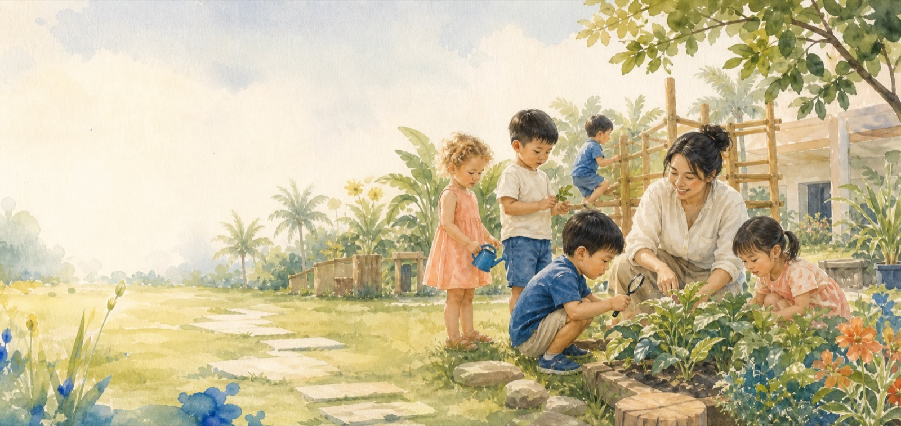
Cocoon Montessori · Da Nang
A place to grow from within.
A 100% English Montessori environment where children touch nature, choose their own work, and build independence every day.
2,000m²A campus built for children
60%Outdoor green space
100%English, all day
AMITrained teaching team
Our philosophy
The child is the architect of their own growth.
To build an environment around every child, drawing out potential, confidence, compassion, and a lifelong love of learning.
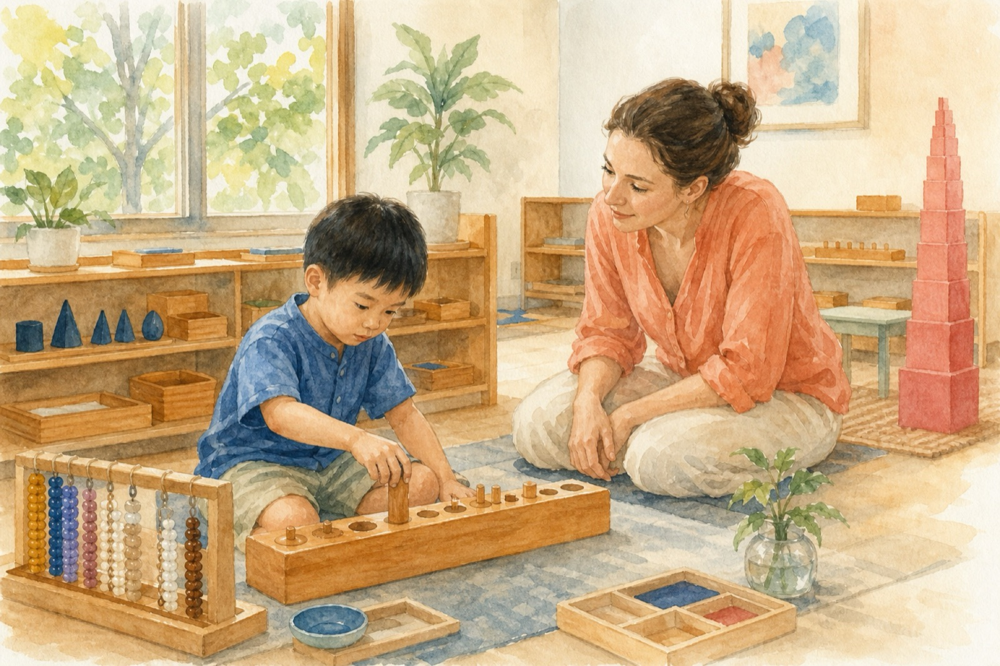
The Montessori approach
Observe first. Prepare carefully. Step back at the right moment.
Teachers do not do the work for a child. They prepare an accessible environment, watch closely, and offer just enough support for discovery.
Core values
EMBRACE
Seven ways we welcome every child exactly as they are.
EExploration · Explore and learn
MMulticulturalism & Global Citizenship · Multiculturalism and global citizenship
BBelonging / Familiarity · Belonging and being connected
RRespect for Human & Nature · Respect for people and nature
AAdaptability · Flexible adaptation
CCreativity · Innovative thinking
EEverlasting love of learning · An unlimited love for learning
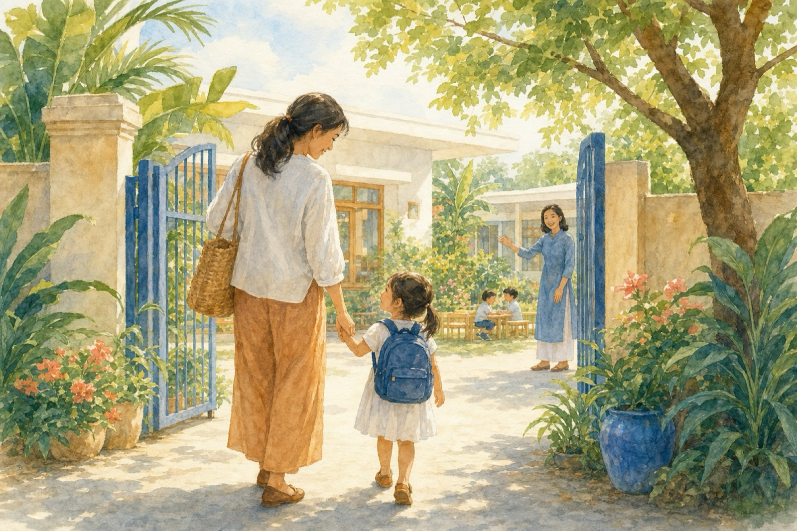
Our founder's story
A school that began with one question: “What would we want for our own children?”
Ms Duong Thi Kim Thoa
As a mother and Cocoon's founder, she built the environment she wanted for her own children: warm, respectful, and spacious enough for growth from within.
Curriculum
Every stage has its own rhythm.
Three connected environments, each prepared for the child’s developmental needs.
15 months – 3 years
Caterpillar
Gentle first steps in language, movement, and independence.
View sample schedule →3 – 5 years
Butterfly
Language, curiosity, and social confidence bloom through child-chosen work.
View sample schedule →5 – 6 years
Preparatory
Strong academic and personal foundations for primary school.
View sample schedule →A day at Cocoon
Bare feet on grass. Hands in soil. A new question every day.
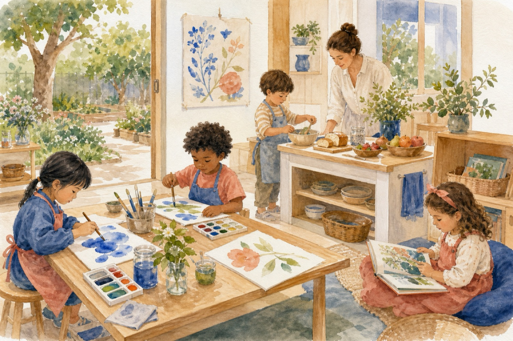
Montessori workChildren choose, focus, and surprise even the adults.
OutdoorsGrass, soil, water, and unexpected encounters with nature.
MealsBreakfast, fruit, lunch, and snack designed for nourishment.
AfternoonsArt, music, cooking, and science open up the world.
Art Studio
Where colour, questions, and creative mess are welcome.
Cooking Lab
Real food. Real skills. Real pride.
Library
English and Vietnamese stories always within reach.
Health & safety
First aid, health monitoring, and family coordination.
Transport
Shuttle routes are confirmed during enrolment.
Calendar & menus
Current documents are shared directly with families.
Time together
Events through the year
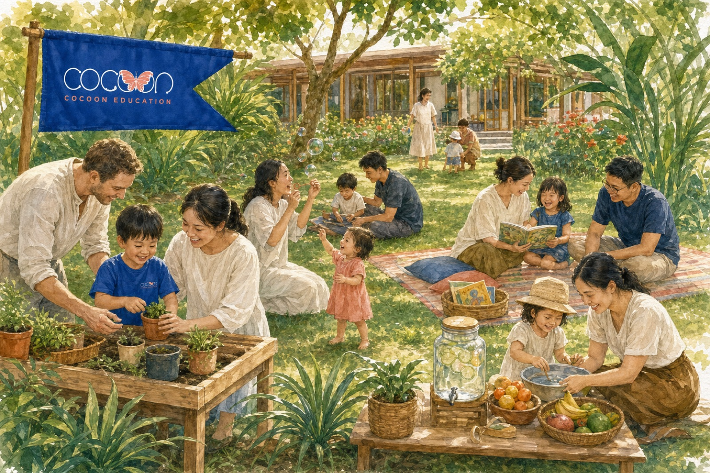
Family DayThe whole community grows together.
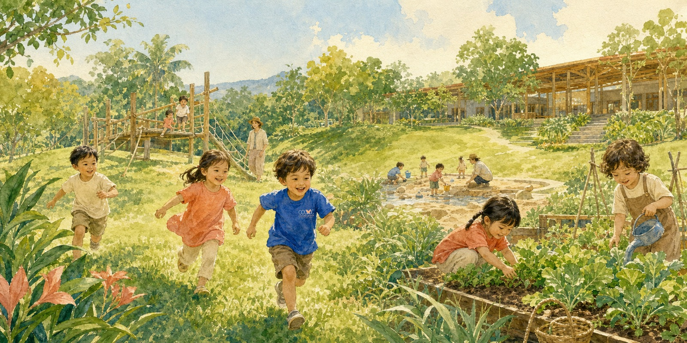
Summer CampWeeks of open-air discovery.
Seasonal festivalsTet, Mid-Autumn, and more.
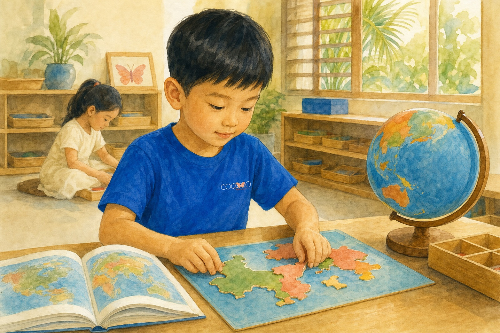
GraduationWhen the butterflies are ready to fly.
Why Cocoon
Built differently, on purpose.
01
A campus built for running, climbing, and growing
Most preschools have a playground. Cocoon has a world: 2,000m² with 60% green space, a vegetable garden, sand, water, and hills made for running down.
02
Classrooms designed for the child
Everything is within reach, carefully ordered, and inviting independence. The quiet comes from genuine concentration.
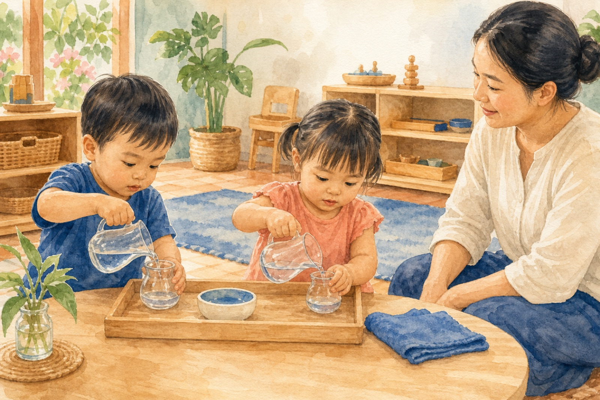
03
An AMI-trained Montessori team
Guides who observe before acting, prepare before teaching, and step back when a child is close to discovering the answer.
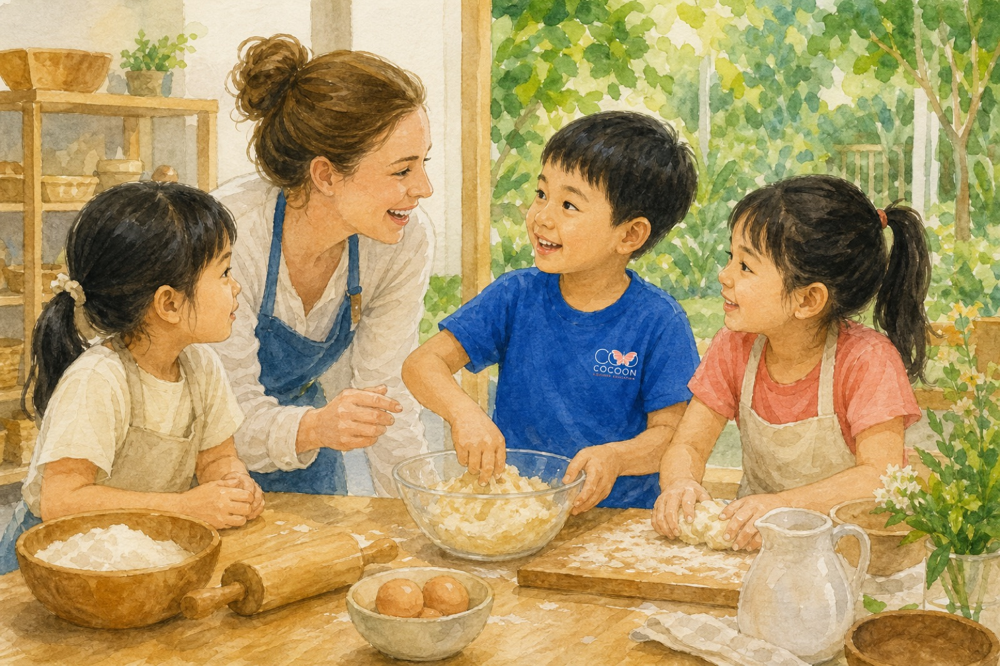
04
English absorbed, not studied
Children do not have an “English lesson.” They live in English all day, during the years when language is absorbed most naturally.
05
Transparent, consistent tuition
The same tuition across all age groups, with no tiered pricing or hidden fees. Families can plan with confidence from day one.
06
A clear path beyond preschool
Children leave not only ready for primary school, but knowing how to learn: independently, curiously, and confidently.
From our parents · Sample copy
Peace of mind begins with the small changes.
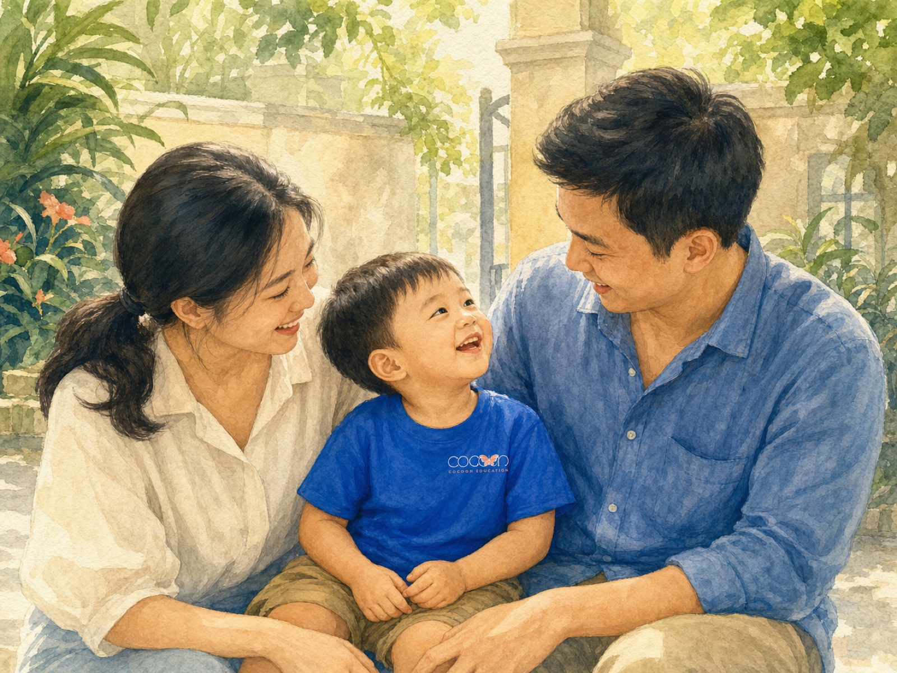
“Within weeks, our child began preparing their own things and talking about school with a new kind of joy. We can see the growth coming from within.”
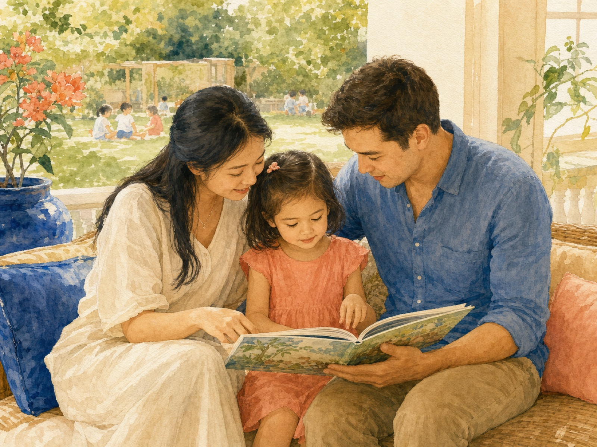
“What I value most is that the teachers truly observe my child. There is no pressure or comparison, yet confidence grows every day.”
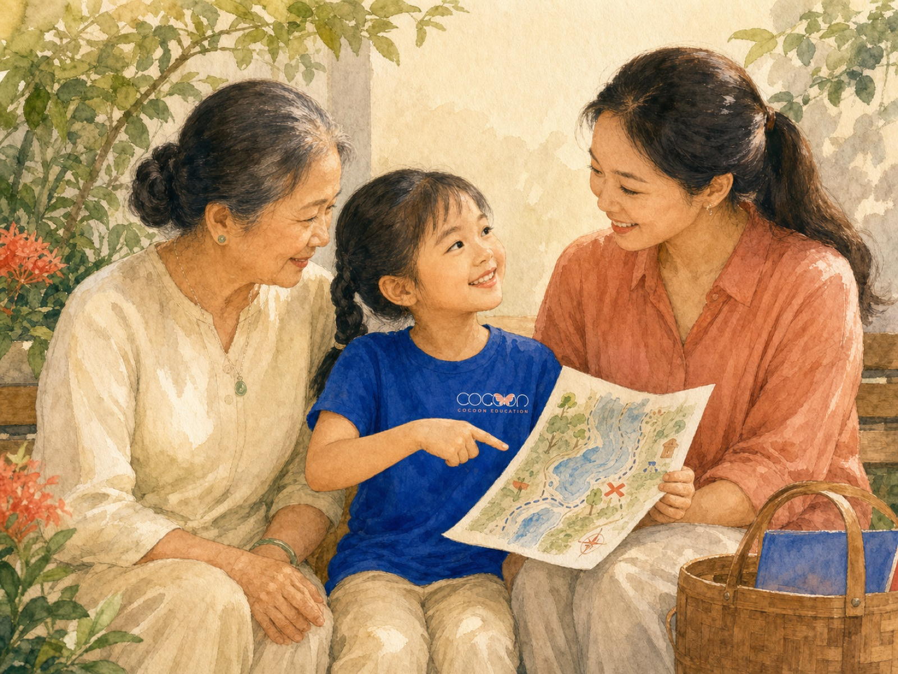
“My child had never learned English, but now uses simple phrases naturally. To them, it is not a subject.”
Admissions
Every great journey starts with a visit.
No paperwork. No pressure. Just a chance to see Cocoon during a real school day.
Tour bookings and admissions consultations are open for 2026–2027.Places are limited by class.
Book a tour
Choose a day that works for your family.
Our team will confirm within 24 hours and prepare the right information for your child’s age.
- 0913 429 964
- admin@cocoon.edu.vn
- 78 Truong Chi Cuong, Hai Chau, Da Nang
What to expect
A reassuring, unhurried visit.
Book
Choose a date. We confirm within 24 hours.
Arrive
A warm welcome at the gate, with no paperwork or pressure.
Explore
See classrooms and the garden, meet teachers, ask anything.
Decide
If Cocoon feels right, we guide you through the next step.
Enrolment process
- Book a tourVisit the school and meet the team.
- Receive your packApplication, fee schedule, and document checklist.
- Submit your applicationReturn the completed documents.
- Confirm your placePay the enrolment deposit.
- Welcome to CocoonReceive orientation before the first day.
Common questions
Ask us anything.
Does Cocoon accept mid-year enrolment?
Yes, subject to availability. Contact us and we will check the right class.
Is Cocoon suitable with no prior English exposure?
Absolutely. Children absorb English naturally throughout the day and need no prior experience.
What are the school hours?
The full schedule is confirmed during consultation and may vary slightly by age group and academic year.
Is transport available?
Shuttle service operates on selected routes confirmed for each academic year.
Can we visit on a Saturday?
Yes. Select Saturday in the form and we will confirm a time.
What documents are needed?
Your enrolment pack will list everything, typically including the application, birth certificate, health records, and guardian documents.
Prefer to talk?
We are happy to help.
0913 429 964
admin@cocoon.edu.vn
78 Truong Chi Cuong, Hai Chau, Da Nang